红队基础设施建设与改造（三）——武装你的Burpsuite（中）
本文所述的一切技术仅供网络安全研究学习之用，请勿用于任何的违法用途，否则由此所产生的一切后果自负！
Burp的基础插件安装已经在上一篇文章中讲了，本篇主要讲BP插件的开发，毕竟别人的东西用起来还是自己写的香。本来这篇文章是准备全写完再发出来，但是发现内容真的有亿点点多还是决定拆一下。
BP插件的开发语言支持Java和Python，由于BP本来就是Java开发的所以对Java的插件支持也更好，我们在后面的文章中JAVA开发和Python开发都会讲到。在找了半天资料后发现官方给出了一个链接,这个连接中的文档描述了各种编写规则
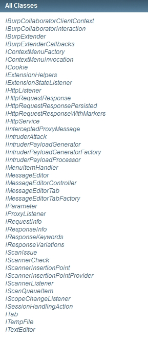
还给出了一些实例
首先来讲讲BP开发的基础，了解一下API，来解读一下官方文档
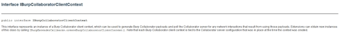
第一个Interface IBurpCollaboratorClientContext
这个接口用于生成payload并与collaborator服务器交互，通过轮询来得到网络交互的数据包。该类接口包含有以下方法，可以接收返回，生成payload，得到collaborator服务器地址等
| Modifier and Type | Method and Description |
|---|---|
| java.util.List<IBurpCollaboratorInteraction> | fetchAllCollaboratorInteractions() This method is used to retrieve all interactions received by the Collaborator server resulting from payloads that were generated for this context. |
| java.util.List<IBurpCollaboratorInteraction> | fetchAllInfiltratorInteractions() This method is used to retrieve all interactions made by Burp Infiltrator instrumentation resulting from payloads that were generated for this context. |
| java.util.List<IBurpCollaboratorInteraction> | fetchCollaboratorInteractionsFor(java.lang.String payload) This method is used to retrieve interactions received by the Collaborator server resulting from a single payload that was generated for this context. |
| java.util.List<IBurpCollaboratorInteraction> | fetchInfiltratorInteractionsFor(java.lang.String payload) This method is used to retrieve interactions made by Burp Infiltrator instrumentation resulting from a single payload that was generated for this context. |
| java.lang.String | generatePayload(boolean includeCollaboratorServerLocation) This method is used to generate new Burp Collaborator payloads. |
| java.lang.String | getCollaboratorServerLocation() This method is used to retrieve the network location of the Collaborator server. |
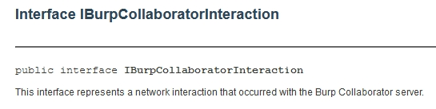
第二个接口的描述就简短很多，会与Burp Collaborator服务器进行网络交互。方法也就是获取发生交互的属性。
| Modifier and Type | Method and Description |
|---|---|
| java.util.Map<java.lang.String,java.lang.String> | getProperties() This method is used to retrieve a map containing all properties of the interaction. |
| java.lang.String | getProperty(java.lang.String name) This method is used to retrieve a property of the interaction. |
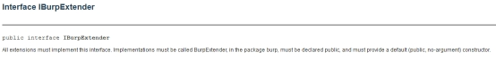
IBurpExtender是所有插件都必须实现的接口，且必须以public形式声明且提供默认构造函数，方法在加载插件时才会调用。
| Modifier and Type | Method and Description |
|---|---|
| void | registerExtenderCallbacks(IBurpExtenderCallbacks callbacks) This method is invoked when the extension is loaded. |
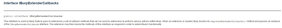
IBurpExtenderCallbacks接口用于通过回调函数告诉相关组件插件需要调用哪些部分来进行支持或是拓展哪些部分的功能。具有的方法为各个模块下的声明，burp中能调用的功能似乎都在这里了
| Modifier and Type | Method and Description |
| void | addScanIssue(IScanIssue issue) This method is used to register a new Scanner issue. |
| void | addSuiteTab(ITab tab) This method is used to add a custom tab to the main Burp Suite window. |
| void | addToSiteMap(IHttpRequestResponse item) This method can be used to add an item to Burp’s site map with the specified request/response details. |
| IHttpRequestResponseWithMarkers | [applyMarkers](#applyMarkers(burp.IHttpRequestResponse, java.util.List, java.util.List))(IHttpRequestResponse httpRequestResponse, java.util.List<int[]> requestMarkers, java.util.List<int[]> responseMarkers) This method is used to apply markers to an HTTP request or response, at offsets into the message that are relevant for some particular purpose. |
| IBurpCollaboratorClientContext | createBurpCollaboratorClientContext() This method is used to create a new Burp Collaborator client context, which can be used to generate Burp Collaborator payloads and poll the Collaborator server for any network interactions that result from using those payloads. |
| IMessageEditor | [createMessageEditor](#createMessageEditor(burp.IMessageEditorController, boolean))(IMessageEditorController controller, boolean editable) This method is used to create a new instance of Burp’s HTTP message editor, for the extension to use in its own UI. |
| ITextEditor | createTextEditor() This method is used to create a new instance of Burp’s plain text editor, for the extension to use in its own UI. |
| void | customizeUiComponent(java.awt.Component component) This method is used to customize UI components in line with Burp’s UI style, including font size, colors, table line spacing, etc. |
| IScanQueueItem | [doActiveScan](#doActiveScan(java.lang.String, int, boolean, byte[]))(java.lang.String host, int port, boolean useHttps, byte[] request) This method can be used to send an HTTP request to the Burp Scanner tool to perform an active vulnerability scan. |
| IScanQueueItem | [doActiveScan](#doActiveScan(java.lang.String, int, boolean, byte[], java.util.List))(java.lang.String host, int port, boolean useHttps, byte[] request, java.util.List<int[]> insertionPointOffsets) This method can be used to send an HTTP request to the Burp Scanner tool to perform an active vulnerability scan, based on a custom list of insertion points that are to be scanned. |
| void | [doPassiveScan](#doPassiveScan(java.lang.String, int, boolean, byte[], byte[]))(java.lang.String host, int port, boolean useHttps, byte[] request, byte[] response) This method can be used to send an HTTP request to the Burp Scanner tool to perform a passive vulnerability scan. |
| void | excludeFromScope(java.net.URL url) This method can be used to exclude the specified URL from the Suite-wide scope. |
| void | exitSuite(boolean promptUser) This method can be used to shut down Burp programmatically, with an optional prompt to the user. |
| void | [generateScanReport](#generateScanReport(java.lang.String, burp.IScanIssue[], java.io.File))(java.lang.String format, IScanIssue[] issues, java.io.File file) This method is used to generate a report for the specified Scanner issues. |
| java.lang.String[] | getBurpVersion() This method retrieves information about the version of Burp in which the extension is running. |
| java.lang.String[] | getCommandLineArguments() This method returns the command line arguments that were passed to Burp on startup. |
| java.util.List<IContextMenuFactory> | getContextMenuFactories() This method is used to retrieve the context menu factories that are registered by the extension. |
| java.util.List<ICookie> | getCookieJarContents() This method is used to retrieve the contents of Burp’s session handling cookie jar. |
| java.lang.String | getExtensionFilename() This method retrieves the absolute path name of the file from which the current extension was loaded. |
| java.util.List<IExtensionStateListener> | getExtensionStateListeners() This method is used to retrieve the extension state listeners that are registered by the extension. |
| java.lang.String[] | getHeaders(byte[] message) Deprecated. Use IExtensionHelpers.analyzeRequest() or IExtensionHelpers.analyzeResponse() instead. |
| IExtensionHelpers | getHelpers() This method is used to obtain an IExtensionHelpers object, which can be used by the extension to perform numerous useful tasks. |
| java.util.List<IHttpListener> | getHttpListeners() This method is used to retrieve the HTTP listeners that are registered by the extension. |
| java.util.List<IIntruderPayloadGeneratorFactory> | getIntruderPayloadGeneratorFactories() This method is used to retrieve the Intruder payload generator factories that are registered by the extension. |
| java.util.List<IIntruderPayloadProcessor> | getIntruderPayloadProcessors() This method is used to retrieve the Intruder payload processors that are registered by the extension. |
| java.util.List<IMessageEditorTabFactory> | getMessageEditorTabFactories() This method is used to retrieve the message editor tab factories that are registered by the extension. |
| java.lang.String[][] | getParameters(byte[] request) Deprecated. Use IExtensionHelpers.analyzeRequest() instead. |
| IHttpRequestResponse[] | getProxyHistory() This method returns details of all items in the Proxy history. |
| java.util.List<IProxyListener> | getProxyListeners() This method is used to retrieve the Proxy listeners that are registered by the extension. |
| IScanIssue[] | getScanIssues(java.lang.String urlPrefix) This method returns all of the current scan issues for URLs matching the specified literal prefix. |
| java.util.List<IScannerCheck> | getScannerChecks() This method is used to retrieve the Scanner checks that are registered by the extension. |
| java.util.List<IScannerInsertionPointProvider> | getScannerInsertionPointProviders() This method is used to retrieve the Scanner insertion point providers that are registered by the extension. |
| java.util.List<IScannerListener> | getScannerListeners() This method is used to retrieve the Scanner listeners that are registered by the extension. |
| java.util.List<IScopeChangeListener> | getScopeChangeListeners() This method is used to retrieve the scope change listeners that are registered by the extension. |
| java.util.List<ISessionHandlingAction> | getSessionHandlingActions() This method is used to retrieve the session handling actions that are registered by the extension. |
| IHttpRequestResponse[] | getSiteMap(java.lang.String urlPrefix) This method returns details of items in the site map. |
| java.io.OutputStream | getStderr() This method is used to obtain the current extension’s standard error stream. |
| java.io.OutputStream | getStdout() This method is used to obtain the current extension’s standard output stream. |
| java.lang.String | getToolName(int toolFlag) This method is used to obtain the descriptive name for the Burp tool identified by the tool flag provided. |
| void | includeInScope(java.net.URL url) This method can be used to include the specified URL in the Suite-wide scope. |
| boolean | isExtensionBapp() This method determines whether the current extension was loaded as a BApp (a Burp App from the BApp Store). |
| boolean | isInScope(java.net.URL url) This method can be used to query whether a specified URL is within the current Suite-wide scope. |
| void | issueAlert(java.lang.String message) This method can be used to display a specified message in the Burp Suite alerts tab. |
| void | loadConfig(java.util.Map<java.lang.String,java.lang.String> config) Deprecated. Use loadConfigFromJson() instead. |
| void | loadConfigFromJson(java.lang.String config) This method causes Burp to load a new project-level configuration from the JSON String provided. |
| java.lang.String | loadExtensionSetting(java.lang.String name) This method is used to load configuration settings for the extension that were saved using the method saveExtensionSetting(). |
| IHttpRequestResponse | [makeHttpRequest](#makeHttpRequest(burp.IHttpService, byte[]))(IHttpService httpService, byte[] request) This method can be used to issue HTTP requests and retrieve their responses. |
| byte[] | [makeHttpRequest](#makeHttpRequest(java.lang.String, int, boolean, byte[]))(java.lang.String host, int port, boolean useHttps, byte[] request) This method can be used to issue HTTP requests and retrieve their responses. |
| void | printError(java.lang.String error) This method prints a line of output to the current extension’s standard error stream. |
| void | printOutput(java.lang.String output) This method prints a line of output to the current extension’s standard output stream. |
| void | registerContextMenuFactory(IContextMenuFactory factory) This method is used to register a factory for custom context menu items. |
| void | registerExtensionStateListener(IExtensionStateListener listener) This method is used to register a listener which will be notified of changes to the extension’s state. |
| void | registerHttpListener(IHttpListener listener) This method is used to register a listener which will be notified of requests and responses made by any Burp tool. |
| void | registerIntruderPayloadGeneratorFactory(IIntruderPayloadGeneratorFactory factory) This method is used to register a factory for Intruder payloads. |
| void | registerIntruderPayloadProcessor(IIntruderPayloadProcessor processor) This method is used to register a custom Intruder payload processor. |
| void | [registerMenuItem](#registerMenuItem(java.lang.String, burp.IMenuItemHandler))(java.lang.String menuItemCaption, IMenuItemHandler menuItemHandler) Deprecated. Use registerContextMenuFactory() instead. |
| void | registerMessageEditorTabFactory(IMessageEditorTabFactory factory) This method is used to register a factory for custom message editor tabs. |
| void | registerProxyListener(IProxyListener listener) This method is used to register a listener which will be notified of requests and responses being processed by the Proxy tool. |
| void | registerScannerCheck(IScannerCheck check) This method is used to register a custom Scanner check. |
| void | registerScannerInsertionPointProvider(IScannerInsertionPointProvider provider) This method is used to register a provider of Scanner insertion points. |
| void | registerScannerListener(IScannerListener listener) This method is used to register a listener which will be notified of new issues that are reported by the Scanner tool. |
| void | registerScopeChangeListener(IScopeChangeListener listener) This method is used to register a listener which will be notified of changes to Burp’s suite-wide target scope. |
| void | registerSessionHandlingAction(ISessionHandlingAction action) This method is used to register a custom session handling action. |
| void | removeContextMenuFactory(IContextMenuFactory factory) This method is used to remove a context menu factory that has been registered by the extension. |
| void | removeExtensionStateListener(IExtensionStateListener listener) This method is used to remove an extension state listener that has been registered by the extension. |
| void | removeHttpListener(IHttpListener listener) This method is used to remove an HTTP listener that has been registered by the extension. |
| void | removeIntruderPayloadGeneratorFactory(IIntruderPayloadGeneratorFactory factory) This method is used to remove an Intruder payload generator factory that has been registered by the extension. |
| void | removeIntruderPayloadProcessor(IIntruderPayloadProcessor processor) This method is used to remove an Intruder payload processor that has been registered by the extension. |
| void | removeMessageEditorTabFactory(IMessageEditorTabFactory factory) This method is used to remove a message editor tab factory that has been registered by the extension. |
| void | removeProxyListener(IProxyListener listener) This method is used to remove a Proxy listener that has been registered by the extension. |
| void | removeScannerCheck(IScannerCheck check) This method is used to remove a Scanner check that has been registered by the extension. |
| void | removeScannerInsertionPointProvider(IScannerInsertionPointProvider provider) This method is used to remove a Scanner insertion point provider that has been registered by the extension. |
| void | removeScannerListener(IScannerListener listener) This method is used to remove a Scanner listener that has been registered by the extension. |
| void | removeScopeChangeListener(IScopeChangeListener listener) This method is used to remove a scope change listener that has been registered by the extension. |
| void | removeSessionHandlingAction(ISessionHandlingAction action) This method is used to remove a session handling action that has been registered by the extension. |
| void | removeSuiteTab(ITab tab) This method is used to remove a previously-added tab from the main Burp Suite window. |
| void | restoreState(java.io.File file) Deprecated. State files have been replaced with Burp project files. |
| IHttpRequestResponsePersisted | saveBuffersToTempFiles(IHttpRequestResponse httpRequestResponse) This method is used to save the request and response of an IHttpRequestResponse object to temporary files, so that they are no longer held in memory. |
| java.util.Map<java.lang.String,java.lang.String> | saveConfig() Deprecated. Use saveConfigAsJson() instead. |
| java.lang.String | saveConfigAsJson(java.lang.String… configPaths) This method causes Burp to save its current project-level configuration in JSON format. |
| void | [saveExtensionSetting](#saveExtensionSetting(java.lang.String, java.lang.String))(java.lang.String name, java.lang.String value) This method is used to save configuration settings for the extension in a persistent way that survives reloads of the extension and of Burp Suite. |
| void | saveState(java.io.File file) Deprecated. State files have been replaced with Burp project files. |
| ITempFile | saveToTempFile(byte[] buffer) This method is used to create a temporary file on disk containing the provided data. |
| void | sendToComparer(byte[] data) This method can be used to send data to the Comparer tool. |
| void | [sendToIntruder](#sendToIntruder(java.lang.String, int, boolean, byte[]))(java.lang.String host, int port, boolean useHttps, byte[] request) This method can be used to send an HTTP request to the Burp Intruder tool. |
| void | [sendToIntruder](#sendToIntruder(java.lang.String, int, boolean, byte[], java.util.List))(java.lang.String host, int port, boolean useHttps, byte[] request, java.util.List<int[]> payloadPositionOffsets) This method can be used to send an HTTP request to the Burp Intruder tool. |
| void | [sendToRepeater](#sendToRepeater(java.lang.String, int, boolean, byte[], java.lang.String))(java.lang.String host, int port, boolean useHttps, byte[] request, java.lang.String tabCaption) This method can be used to send an HTTP request to the Burp Repeater tool. |
| void | sendToSpider(java.net.URL url) This method can be used to send a seed URL to the Burp Spider tool. |
| void | setExtensionName(java.lang.String name) This method is used to set the display name for the current extension, which will be displayed within the user interface for the Extender tool. |
| void | setProxyInterceptionEnabled(boolean enabled) This method sets the master interception mode for Burp Proxy. |
| void | unloadExtension() This method is used to unload the extension from Burp Suite. |
| void | updateCookieJar(ICookie cookie) This method is used to update the contents of Burp’s session handling cookie jar. |
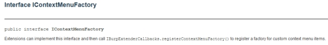
IContextMenuFactory用于添加自定义菜单，这和我们上篇文章中看到的大部分插件一样，会有单独的菜单。
| Modifier and Type | Method and Description |
|---|---|
| java.util.List<javax.swing.JMenuItem> | createMenuItems(IContextMenuInvocation invocation) This method will be called by Burp when the user invokes a context menu anywhere within Burp. |
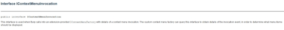
IContextMenuInvocation这个接口可以获得调用事件的详细信息，以确定应该显示哪些菜单项。方法主要被用于获取相关信息
| Modifier and Type | Method and Description |
|---|---|
| java.awt.event.InputEvent | getInputEvent() This method can be used to retrieve the native Java input event that was the trigger for the context menu invocation. |
| byte | getInvocationContext() This method can be used to retrieve the context within which the menu was invoked. |
| IScanIssue[] | getSelectedIssues() This method can be used to retrieve details of the Scanner issues that were selected by the user when the context menu was invoked. |
| IHttpRequestResponse[] | getSelectedMessages() This method can be used to retrieve details of the HTTP requests / responses that were shown or selected by the user when the context menu was invoked. |
| int[] | getSelectionBounds() This method can be used to retrieve the bounds of the user’s selection into the current message, if applicable. |
| int | getToolFlag() This method can be used to retrieve the Burp tool within which the context menu was invoked. |
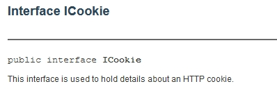
Interface ICookie接口用于保存Cookie的详细信息，方法主要用于从cookie中获取相关信息如cookie名称，内容，过期时间等
| Modifier and Type | Method and Description |
|---|---|
| java.lang.String | getDomain() This method is used to retrieve the domain for which the cookie is in scope. |
| java.util.Date | getExpiration() This method is used to retrieve the expiration time for the cookie. |
| java.lang.String | getName() This method is used to retrieve the name of the cookie. |
| java.lang.String | getPath() This method is used to retrieve the path for which the cookie is in scope. |
| java.lang.String | getValue() This method is used to retrieve the value of the cookie. |
========================这是一条分割线========================
写到这里的时候我发现一个个介绍似乎太复杂了，反正大部分人学开发不用全部用到，所以该踩的坑我帮你们踩了，下面就介绍一些开发中常用的接口，但其实还是很多啊…
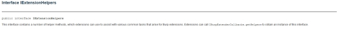
IExtensionHelpers提供了很多常用的辅助方法，扩展可以通过调用 IBurpExtenderCallbacks.getHelpers 获得此接口的实例。
常用方法如下，主要是一些编码转换等以及对包的修改。
| Modifier and Type | Method and Description |
|---|---|
| byte[] | [addParameter](#addParameter(byte[], burp.IParameter))(byte[] request, IParameter parameter) This method adds a new parameter to an HTTP request, and if appropriate updates the Content-Length header. |
| IRequestInfo | analyzeRequest(byte[] request) This method can be used to analyze an HTTP request, and obtain various key details about it. |
| IResponseInfo | analyzeResponse(byte[] response) This method can be used to analyze an HTTP response, and obtain various key details about it. |
| IResponseKeywords | [analyzeResponseKeywords](#analyzeResponseKeywords(java.util.List, byte[]…))(java.util.List<java.lang.String> keywords, byte[]… responses) This method analyzes one or more responses to identify the number of occurrences of the specified keywords and returns an IResponseKeywords object that can be queried to obtain details of the number of occurrences of each keyword. |
| byte[] | base64Decode(byte[] data) This method can be used to Base64-decode the specified data. |
| byte[] | base64Decode(java.lang.String data) This method can be used to Base64-decode the specified data. |
| java.lang.String | base64Encode(byte[] data) This method can be used to Base64-encode the specified data. |
| java.lang.String | base64Encode(java.lang.String data) This method can be used to Base64-encode the specified data. |
| byte[] | [buildHttpMessage](#buildHttpMessage(java.util.List, byte[]))(java.util.List<java.lang.String> headers, byte[] body) This method builds an HTTP message containing the specified headers and message body. |
| byte[] | buildHttpRequest(java.net.URL url) This method creates a GET request to the specified URL. |
| IParameter | [buildParameter](#buildParameter(java.lang.String, java.lang.String, byte))(java.lang.String name, java.lang.String value, byte type) This method constructs an IParameter object based on the details provided. |
| java.lang.String | bytesToString(byte[] data) This method can be used to convert data from an array of bytes into String form. |
| byte[] | urlDecode(byte[] data) This method can be used to URL-decode the specified data. |
| java.lang.String | urlDecode(java.lang.String data) This method can be used to URL-decode the specified data. |
| byte[] | urlEncode(byte[] data) This method can be used to URL-encode the specified data. |
| java.lang.String | urlEncode(java.lang.String data) This method can be used to URL-encode the specified data. |

IExtensionStateListener接口可以注册一个扩展的状态监听器。在扩展的状态发生改变时，监听器将会收到通知。
官方还给了一条提示：任何启动后台线程或打开系统资源（如文件或数据库连接）的扩展插件都应该注册一个监听器，并在被卸载后终止线程/关闭资源。
| Modifier and Type | Method and Description |
|---|---|
| void | extensionUnloaded() This method is called when the extension is unloaded. |
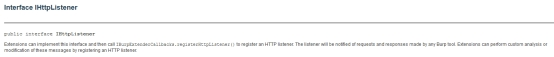
IHttpListener同样是一个注册监听器的接口。Burp 里的任何一个工具发起 HTTP 请求或收到 HTTP 响应都会通知此监听器。扩展可以得到这些交互的数据，进行分析和修改，例如我们上篇文章中提到的Autorize等插件都会调用该接口请求用于捕获请求和响应。
| Modifier and Type | Method and Description |
|---|---|
| void | [processHttpMessage](#processHttpMessage(int, boolean, burp.IHttpRequestResponse))(int toolFlag, boolean messageIsRequest, IHttpRequestResponse messageInfo) This method is invoked when an HTTP request is about to be issued, and when an HTTP response has been received. |
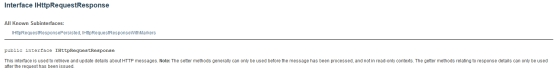
IHttpRequestResponse用于检索和更新有关 HTTP 消息的详细信息。
注意：setter 方法通常只能在消息被被处理之前使用，因为它是一个写操作，因此在只读的上下文中也是不可用的。与响应细节相关的 getter 方法只能用在请求发出后使用。主要方法可以获取请求响应，用户的注释和高亮条目，并且可以更新他们。
| Modifier and Type | Method and Description |
|---|---|
| java.lang.String | getComment() This method is used to retrieve the user-annotated comment for this item, if applicable. |
| java.lang.String | getHighlight() This method is used to retrieve the user-annotated highlight for this item, if applicable. |
| IHttpService | getHttpService() This method is used to retrieve the HTTP service for this request / response. |
| byte[] | getRequest() This method is used to retrieve the request message. |
| byte[] | getResponse() This method is used to retrieve the response message. |
| void | setComment(java.lang.String comment) This method is used to update the user-annotated comment for this item. |
| void | setHighlight(java.lang.String color) This method is used to update the user-annotated highlight for this item. |
| void | setHttpService(IHttpService httpService) This method is used to update the HTTP service for this request / response. |
| void | setRequest(byte[] message) This method is used to update the request message. |
| void | setResponse(byte[] message) This method is used to update the response message. |
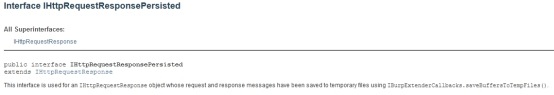
IHttpRequestResponsePersisted是 IHttpRequestResponse 接口的一个子接口，该接口用于使用 IBurpExtenderCallbacks.saveBuffersToTempFiles() 将一个IHttpRequestResponse 对象的请求和响应消息保存到临时文件。
但是在后面的详细信息中可以看到该方法已经过时了
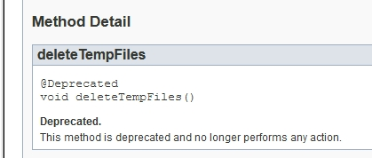
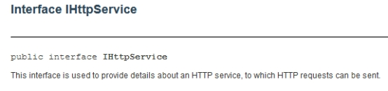
IHttpService用于提供关于 HTTP 服务信息的细节。常用方法获取服务器相关信息
| Modifier and Type | Method and Description |
|---|---|
| java.lang.String | getHost() This method returns the hostname or IP address for the service. |
| int | getPort() This method returns the port number for the service. |
| java.lang.String | getProtocol() This method returns the protocol for the service. |
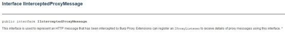
IInterceptedProxyMessage不能被扩展实现，它表示了已被 Burp 代理拦截的 HTTP 消息。扩展可以利用此接口注册一个 IProxyListener 以便接收代理消息的细节。
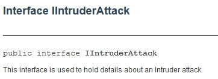
IIntruderAttack用于操控 Intruder 工具的攻击详情。，只有两个方法来获取HTTP服务信息和请求模板。
| Modifier and Type | Method and Description |
|---|---|
| IHttpService | getHttpService() This method is used to retrieve the HTTP service for the attack. |
| byte[] | getRequestTemplate() This method is used to retrieve the request template for the attack. |
此外还提供了三个接口用于payload生成
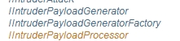
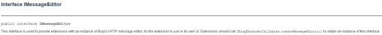
IMessageEditor用于为扩展程序提供Burp HTTP消息编辑器的实例，以便在其自己的UI中使用该扩展程序。方法主要用于获取数据。
| Modifier and Type | Method and Description |
|---|---|
| java.awt.Component | getComponent() This method returns the UI component of the editor, for extensions to add to their own UI. |
| byte[] | getMessage() This method is used to retrieve the currently displayed message, which may have been modified by the user. |
| byte[] | getSelectedData() This method returns the data that is currently selected by the user. |
| int[] | getSelectionBounds() This method can be used to retrieve the bounds of the user’s selection into the displayed message, if applicable. |
| boolean | isMessageModified() This method is used to determine whether the current message has been modified by the user. |
| void | [setMessage](#setMessage(byte[], boolean))(byte[] message, boolean isRequest) This method is used to display an HTTP message in the editor. |
同样也有一些接口用于支持该接口的功能实现

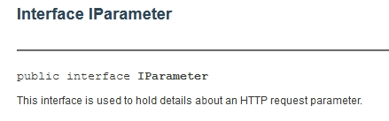
IParameter用于获取HTTP请求中的参数，方法能用来提取cookie，body内容，还能解析JSON，XML等
| Modifier and Type | Field and Description |
|---|---|
| static byte | PARAM_BODY Used to indicate a parameter within the message body. |
| static byte | PARAM_COOKIE Used to indicate an HTTP cookie. |
| static byte | PARAM_JSON Used to indicate an item of data within a JSON structure. |
| static byte | PARAM_MULTIPART_ATTR Used to indicate the value of a parameter attribute within a multi-part message body (such as the name of an uploaded file). |
| static byte | PARAM_URL Used to indicate a parameter within the URL query string. |
| static byte | PARAM_XML Used to indicate an item of data within an XML structure. |
| static byte | PARAM_XML_ATTR Used to indicate the value of a tag attribute within an XML structure. |
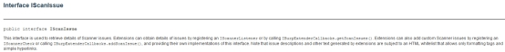
IScanIssue用于检索的扫描漏洞的详细信息。 扩展可以通过注册IScannerListener或调用IBurpExtenderCallbacks.getScanIssues（）来获取漏洞的详细信息。 扩展程序还可以通过注册IScannerCheck或调用IBurpExtenderCallbacks.addScanIssue（）并提供此接口的自己的实现来实现自定义扫描。（这里放个预告，下一篇文章中会有关于特定漏洞扫描的插件开发教程）
| Modifier and Type | Method and Description |
|---|---|
| java.lang.String | getConfidence() This method returns the issue confidence level. |
| IHttpRequestResponse[] | getHttpMessages() This method returns the HTTP messages on the basis of which the issue was generated. |
| IHttpService | getHttpService() This method returns the HTTP service for which the issue was generated. |
| java.lang.String | getIssueBackground() This method returns a background description for this type of issue. |
| java.lang.String | getIssueDetail() This method returns detailed information about this specific instance of the issue. |
| java.lang.String | getIssueName() This method returns the name of the issue type. |
| int | getIssueType() This method returns a numeric identifier of the issue type. |
| java.lang.String | getRemediationBackground() This method returns a background description of the remediation for this type of issue. |
| java.lang.String | getRemediationDetail() This method returns detailed information about the remediation for this specific instance of the issue. |
| java.lang.String | getSeverity() This method returns the issue severity level. |
| java.net.URL | getUrl() This method returns the URL for which the issue was generated. |
在Scan部分的接口还是挺多的
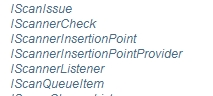
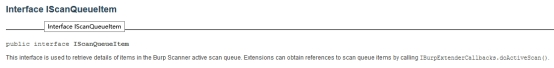
IScanQueueItem用于检索Burp Scanner活动扫描队列中的项目详细信息。
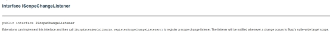
IScopeChangeListener可以在每次Scope发生变化时捕捉变化并通知Listener防止增加无用功。只有一个捕捉变化的方法，有点像触发器。
| Modifier and Type | Method and Description |
|---|---|
| void | scopeChanged() This method is invoked whenever a change occurs to Burp’s suite-wide target scope. |
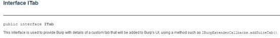
Interface ITab用于创建一个自定义的选项卡，就和之前见到的多数插件一样。
| Modifier and Type | Method and Description |
|---|---|
| java.lang.String | getTabCaption() Burp uses this method to obtain the caption that should appear on the custom tab when it is displayed. |
| java.awt.Component | getUiComponent() Burp uses this method to obtain the component that should be used as the contents of the custom tab when it is displayed. |
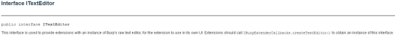
ITextEditor用于提供文本编辑相关操作，主要方法如下：
| Modifier and Type | Method and Description |
|---|---|
| java.awt.Component | getComponent() This method returns the UI component of the editor, for extensions to add to their own UI. |
| byte[] | getSelectedText() This method is used to obtain the currently selected text. |
| int[] | getSelectionBounds() This method can be used to retrieve the bounds of the user’s selection into the displayed text, if applicable. |
| byte[] | getText() This method is used to retrieve the currently displayed text. |
| boolean | isTextModified() This method is used to determine whether the user has modified the contents of the editor. |
| void | setEditable(boolean editable) This method is used to control whether the editor is currently editable. |
| void | setSearchExpression(java.lang.String expression) This method is used to update the search expression that is shown in the search bar below the editor. |
| void | setText(byte[] text) This method is used to update the currently displayed text in the editor. |
可能上面主要是翻译官方文档的东西大家看的比较枯燥，因此在本篇文末放出重磅入门教程之
输出HelloWorld！
首先在Burpsuite中导出接口文件Extender->API->Save interface files
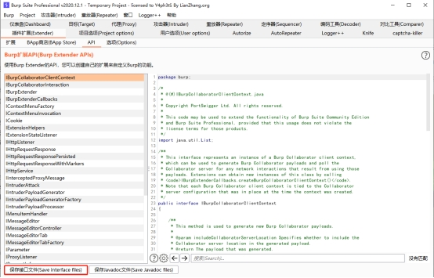
导出后可以看到导出的java文件
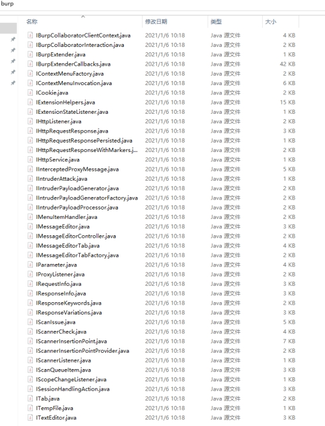
找一个你用的顺手的IDE新建一个项目，这里以IDEA为例，将burp的API导入项目，然后新建BurpExtender.java
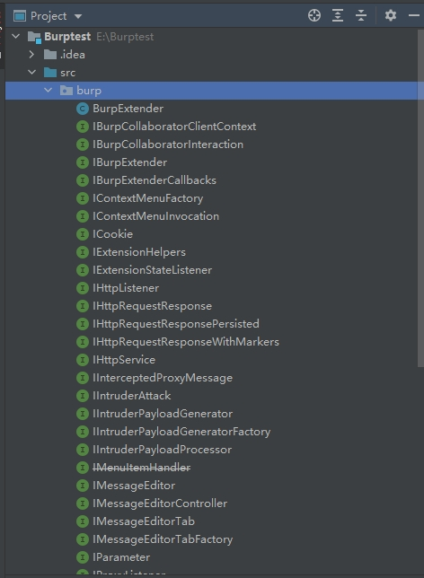
开始写代码
package burp; import java.io.PrintWriter; public class BurpExtender implements IBurpExtender { @Override public void registerExtenderCallbacks(IBurpExtenderCallbacks callbacks) { //设置拓展名 callbacks.setExtensionName(“Hello World test”); //设置输出流和错误输出流对象 PrintWriter stdout = new PrintWriter(callbacks.getStdout(),true); PrintWriter stderr = new PrintWriter(callbacks.getStdout(),true); //推送消息到输出流 stdout.println(“Hello World!”); //推送错误消息到输出流 stderr.println(“Error!”); //推送消息到Burp提醒面板 callbacks.issueAlert(“Alerts!”); //推送异常 throw new RuntimeException(“Exception occured!”); } }
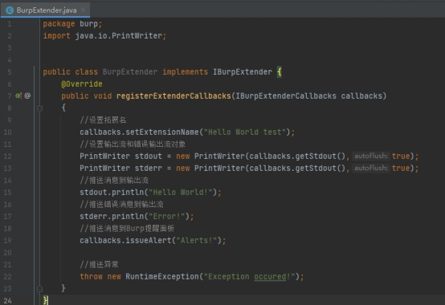
写完后打包成jar
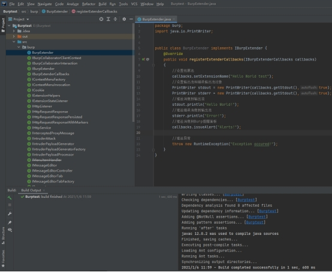
打包后的jar文件
将该jar以Extender的形式导入Burpsuite
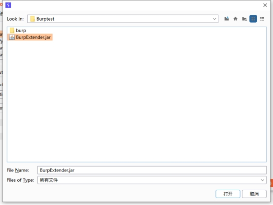
可以看到已经成功加载，但是有个错误，解决过程会写在下一篇文章中
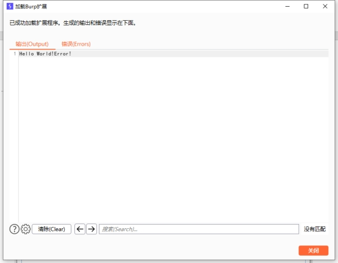
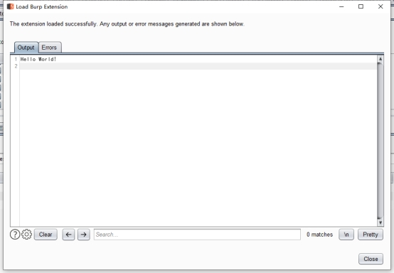